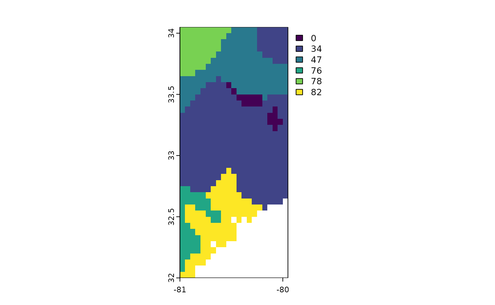

Programmatic interface to the Harmonized World Soil Database ‘HWSD’ web services (https://daac.ornl.gov/cgi-bin/dsviewer.pl?ds_id=1247). Allows for easy downloads of ‘HWSD’ soil data directly to your R workspace or your computer. Routines for both single pixel data downloads and gridded data are provided.
Use
Single pixel location download
Get world soil values for a single site using the following format, specifying coordinates as a pair of latitude, longitude coordinates. Here the call only extracts the top soil fraction of sand and silt (% weight) for one specific location.
At this location we have a top soil fraction of sand of 78% weight and a silt fraction of 12 % weight! Data are returned as tidy data frames including basic meta-data of the query for later subsetting.
print(values)
#> site parameter latitude longitude value
#> 1 HWSD T_SAND 33.95 -81.05 78
#> 2 HWSD T_SILT 33.95 -81.05 12Gridded data
You can grab gridded data by specifying a bounding box c(lat, lon, lat, lon) defined by a bottom left and top right coordinates. Here the call only extracts the top soil fraction of sand (%).
t_sand <- ws_subset(
site = "HWSD",
location = c(32, -81, 34, -80),
param = "T_SAND",
path = tempdir(),
internal = TRUE
)
terra::plot(t_sand)
Alternatively you can use sf bounding box
(st_bbox()) function output to define an extent over which
you want to extract gridded data. The structure of the function also
allows for pipes to be used.
a <- sf::st_sf(a = 1:2,
geom = sf::st_sfc(
sf::st_point(c(34, -81)),
sf::st_point(c(32, -80))),
crs = 4326)
t_sand <- a %>%
sf::st_bbox() %>%
ws_subset(param = "T_SAND")This call gives an equivalent dataset as above, as shown in the plot.
terra::plot(t_sand)